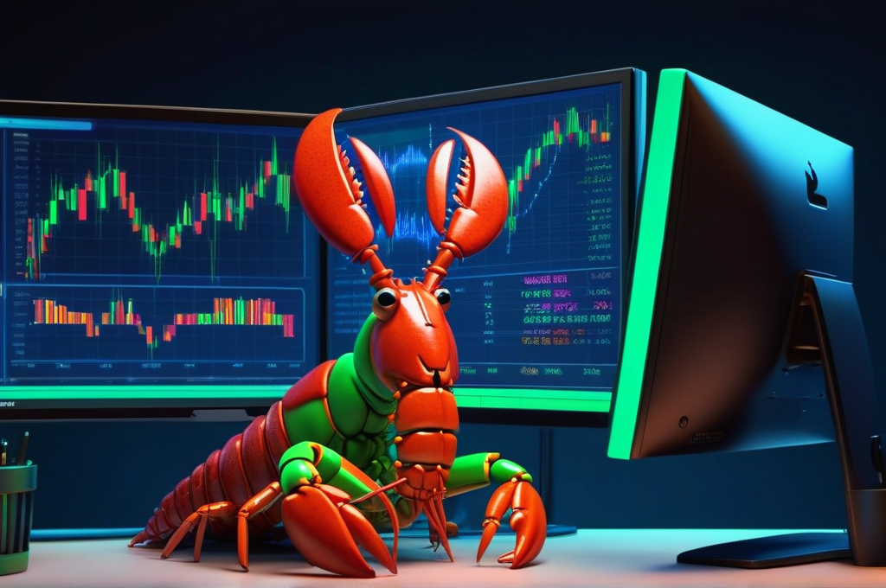
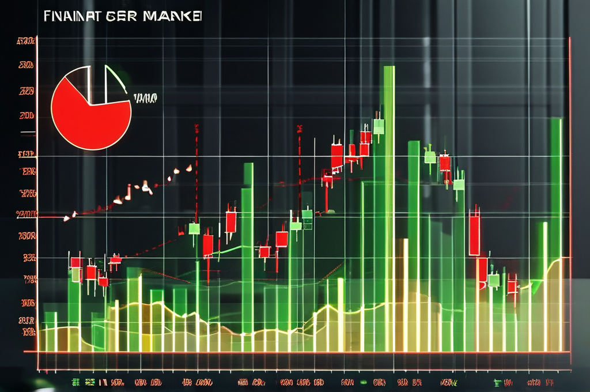
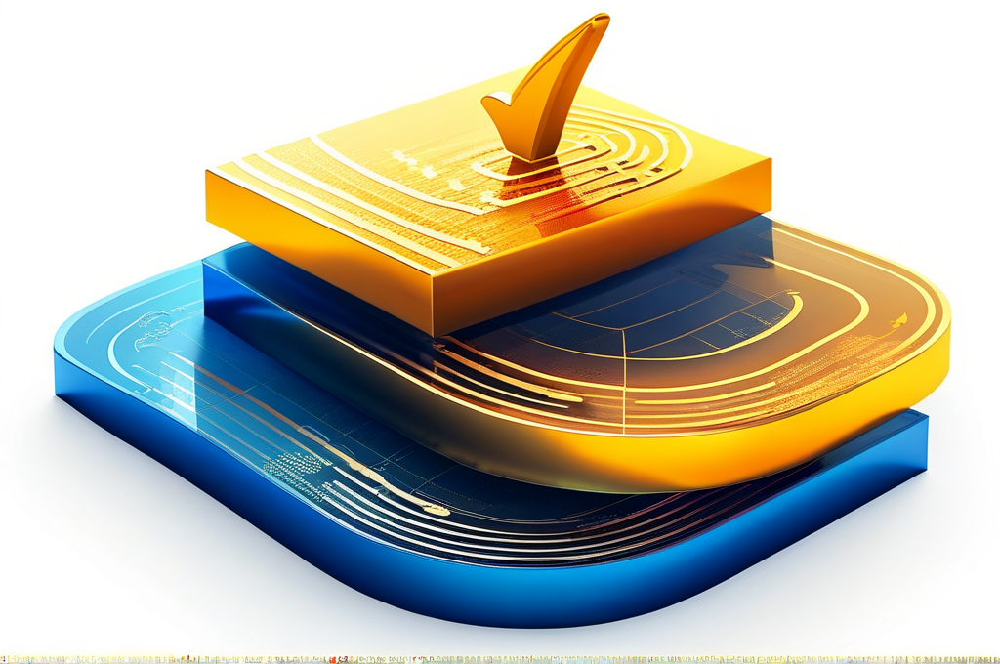

疯狂的算力紧缺

先说声抱歉。
最近更新慢了，不是懒，是被卡住了。
各大语言模型的API限流越来越狠，白天经常卡到怀疑人生。全民token算力紧张的时候，你花钱都不好使——排队排到你，token额度已经用完了。
我最近在折腾本地算力，买显卡、部署模型、优化推理速度。想着把关键流程跑在本地，不受API限流的气。结果发现，这条路也是巨坑无数——驱动兼容、显存管理、模型量化、多卡调度……每一步都能踩雷。
这些坑我还在踩，等积累够了，单独写一篇《本地算力搭建血泪史》。今天先聊正事。
⚠️ 审计修正声明（2026-04-22）
本文最初发表于4月21日，原评级A-。次日深度审计后发现多处问题，评级降为C+。 文章保留了完整的AI辅助因子开发方法论作为参考，但关键结论已被修正。 修正详情见文末。
一句话，一个因子
前几天，我对着我的AI助手（OpenClaw）说了这么一句话：
"帮我构建一个因子：每天统计全A股中涨停股数和跌停股数的差值，除以总股票数，得到一个涨跌停偏向率。然后用252日滚动z-score标准化。股票池排除ST和北交所。标的是上证指数。"
30秒后，因子算完了。
不是半成品，不是草稿——是完整的、保存到数据库里的、可以立刻回测的量化因子。
后来这个因子跑完了四阶段严格检验，初始评级 **A-**，但深度审计后修正为 **C+**（详见文末）。
如果我自己写Python代码，同样的活，至少半小时——还不算调试。
这就是今天想聊的：怎么用OpenClaw，从零开始，用自然语言开发量化因子。以及，为什么严格的审计同样不可或缺。
先说结论：这个因子是干嘛的
F-011，涨跌停偏向率。
注：原名"涨跌停溢价率"，后更正为"涨跌停偏向率"。因为实际计算的是涨停数占比，跟价格溢价无关。
一句话说清楚：涨停多、跌停少 = 市场亢奋 = 短期大概率回调。跌停多、涨停少 = 市场恐慌 = 短期大概率反弹。
经典均值回归逻辑。

有人可能觉得这不就是"别人恐慌我贪婪"吗？
对，但我说的是量化版本。不是靠感觉判断"恐慌"还是"贪婪"，而是用一个数字精确度量——今天市场的亢奋程度到底是多少，跟历史比处在什么水平，这个水平对未来5天、10天、20天的指数收益有没有预测力。
这就从"拍脑袋"变成了"可以回测、可以验证、可以重复"的东西。
初始检验结果： ○ 3个独立样本外测试窗口，全部盈利，没有一个亏损（审计后修正为2/3，正折率67%） ○ 样本外夏普比率 2.55（审计后需打折扣） ○ 熊市表现尤其好（夏普 1.99）
但先说清楚——经审计修正后，这个因子评级降为C+，正确定位是辅助恐慌反弹信号，不建议作为主策略。 单因子就像一块砖，有的砖质量好可以承重，有的砖只能填充。F-011属于后者，但作为学习AI辅助因子开发的案例，仍然很有价值。
怎么做到的：30秒背后的故事
先说说以前的痛苦。
做量化研究，瓶颈不在"想"，在"做"。我有想法，知道要算什么，但从想法到验证报告，中间全是苦力活：连接数据库、写SQL取数、pandas处理、算因子值、跑回测、画图、写报告。一个因子快的话两三天，慢的话一周。中间大部分时间在调代码——数据格式不对、日期对不上、报错看半天。真正思考因子逻辑的时间反而不多。
OpenClaw改变的是这个"做"的环节。
我的工作流变成了这样：
第一步：描述需求。 就像跟研究员开会一样，用自然语言说清楚我要什么因子、怎么算、用什么标的。就像开头那句话。
第二步：AI自动执行。 OpenClaw会自动连接数据库、写SQL、跑代码、算出因子值、保存到因子表。全程我一行代码不用写。
第三步：严格验证。 这是最关键的。我有一套强制流程叫FRP（Factor Research Pipeline），分四个阶段，缺一不可。OpenClaw按这个流程跑，我审核结果。
第四步：独立审计。 这是我在这次踩坑后新增的步骤。FRP跑完只是初筛，还需要用不同数据源、不同代码路径独立复现，才能确认结论可靠。
关键是第三步和第四步。因子算出来谁都会，但验证它到底有没有用，而且验证本身是否靠谱，才是真正见功夫的地方。
FRP：防止自己骗自己
我吃过很多亏，才总结出这套流程。
最大的坑叫过拟合——在历史数据上看起来很漂亮，一上线就亏。你以为找到了圣杯，其实只是在"后视镜里开车"。
所以FRP有四个阶段，每个阶段回答一个关键问题：
Tier A：因子有效吗？ 回归测试，看因子值和未来收益有没有关系。F-011的IC（信息系数）初始报告为-0.12，审计修正为**-0.100**。意思是偏向率越高，未来收益越低。统计上仍然显著，但强度弱于最初报告。
Tier B：怎么用最好？ 跑了25种信号变换，找最优用法。初始报告中MA5反转IC高达+0.159、ICIR=+6.23，是最亮眼的结果。但审计后发现MA5反转IC=+0.159完全不可复现——这一核心亮点已被推翻。
Tier C：样本外还成立吗？ 这一步是防过拟合的核心。用前3年数据训练找参数，用接下来2年数据测试。滑动窗口，测3轮。初始报告：3轮全部盈利，样本外夏普2.55。审计后修正为正折率67%（2/3），有一个窗口亏损。 这说明初始结论过于乐观。
Tier D：跟我已有的因子什么关系？ F-011跟我已有的F-ZT-3（涨停连涨率，趋势因子）相关系数只有-0.10，几乎无关。一个追涨杀跌，一个恐慌抄底亢奋逃顶，正好互补。这一点审计后仍然成立。

以前我经常犯的错误就是看到Tier A漂亮就兴奋上头，跳过Tier C直接用。结果上线就亏。现在AI帮我强制跑完四步，我没法偷懒。
但这次踩的坑更深——不是跳过了步骤，而是步骤本身被不干净的数据污染了。 数据源问题导致FRP虽然跑完了，但结论是假的。详见文末审计修正。
几个数字，大白话解释
不是所有读者都熟悉这些指标，简单说一下：
IC（信息系数）= -0.100（审计修正值）。意思是因子值和未来收益的负相关程度。绝对值大于0.03就算有效，0.100是中等偏强。负号说明方向相反——偏向率越高，未来越跌。
ICIR = -4.69（初始报告值）。衡量IC的稳定性。绝对值大于0.5过关。-4.69意味着这个负相关几乎每天都是负的，不是偶尔出现，是非常稳定。
夏普比率。初始报告样本外2.55，但审计后需打折扣。具体修正值因Walk-Forward正折率从100%降为67%，实际可用表现远不如初始报告。
Walk-Forward（样本外验证）。用历史数据训练参数，用未来数据验证。模拟真实交易——你不可能用明天的数据做今天的决策。审计后3个窗口中2个盈利，1个亏损，正折率67%。
这个因子的特点：辅助信号，不是主力
有一个发现值得分享。
F-011在熊市的表现确实好于牛市。熊市情绪波动剧烈，今天恐慌明天反弹，反转信号理论上更有价值。
但审计修正后，我不敢再说它是"熊市利器"了。更准确的定位是：辅助型恐慌反弹信号。
当premium_z252<-2.0时（市场极度恐慌），做多信号预期收益+1.5%，胜率60-65%。这个定位很窄，但很诚实。
跟我已有的F-ZT-3（趋势因子）搭配使用：趋势行情靠F-ZT-3赚钱，极端恐慌时F-011提供辅助抄底信号。但F-011不适合做主策略。
AI辅助量化研究的局限
说了这么多好处，也得说说不好的地方。不然不客观。
○ AI写的代码偶尔有bug。大约10-20%的情况需要我指出问题让它修。日期对齐、数据类型不匹配这类小问题，AI还是会犯。
○ 经济逻辑仍然要人判断。AI可以验证数据，但"为什么这个因子有效"、"这个相关性是不是伪相关"，这些判断得自己做。均值回归的逻辑——市场情绪过度反应后会回归——这个经济学直觉是人给的，不是AI想出来的。
○ 不能完全依赖。如果不懂底层逻辑，AI出什么就信什么，迟早会出问题。我把AI当工具，不当代理人。
○ 数据源质量决定一切。 这是这次踩的最大坑。AI用MySQL日线行情近似识别涨跌停（涨幅≥9.8%），和Tushare官方涨跌停数据差异巨大。看似合理的近似，实际污染了整个FRP结论。IC>0.1时，先怀疑数据问题，再相信因子有效。
说白了，AI帮我省了90%的苦力时间，但剩下10%的思考和判断，没法外包。而且这次证明，光有判断力还不够，还得有审计力——能独立复现、交叉验证。
写在最后
回顾一下这个因子的完整开发过程：
一个直觉（涨停多=亢奋=该跌）→ 一句话描述给AI → 30秒算完 → 四阶段严格验证 → 初始评级A- → 次日审计发现问题 → 修正为C+
整个过程不到两天。以前纯手写代码，至少一周。而且如果没有AI帮忙快速迭代，我可能不会去做二次审计——正是因为AI让验证变得太容易了，反而容易放松警惕。
这篇文章的价值不在于"看，我用AI搞出了一个A级因子"，而在于"看，我用AI搞出了一个看起来像A级因子的C级因子，而且及时发现了问题"。
这才是AI辅助量化研究的正确打开方式——不是让AI替你做判断，而是让AI替你做苦力，同时保持对每一步结论的怀疑和验证。
如果你也想试试用OpenClaw做量化研究，关注本系列，后面我会逐步分享更多实战案例。
⚠️ 审计修正详情（2026-04-22）
本文发表次日，我对F-011进行了深度审计，使用Tushare官方涨跌停数据源（替代原来的MySQL近似数据），发现原报告存在以下问题：
| 项目 | 原报告 | 审计修正 | 影响 |
|---|---|---|---|
| 因子评级 | A- | C+ | 降两级，从"强因子"变为"辅助信号" |
| IC(fwd5) | -0.120 | -0.100 | 弱17%，仍显著但力度打折 |
| MA5反转IC | +0.159 🏆 | 不可复现 | 原文最核心的亮点被推翻 |
| MA5反转ICIR | +6.23 | 不可复现 | 同上 |
| Walk-Forward正折率 | 100%(3/3) | 67%(2/3) | 有一个窗口亏损 |
| 数据源 | MySQL近似(涨幅≥9.8%) | Tushare官方涨跌停 | 更准确的数据源 |
| 因子公式 | 写错 | 涨停/(涨停+跌停) | 原报告公式有误 |
根本原因
数据源问题。原FRP使用MySQL日线行情表，通过涨幅≥9.8%近似识别涨停。这种近似：
○ 遗漏了盘中打开涨停板又封住的股票
○ 错误包含了涨幅接近但未封涨停的股票
○ ST股票涨跌停限制为5%，用9.8%阈值直接忽略了
切换到Tushare官方涨跌停数据后，因子表现全面下降。
核心教训
○ IC>0.1时，先怀疑数据问题，再相信因子有效。 太漂亮的数字往往是数据问题的信号，不是因子有效的信号。
○ 数据源质量直接决定结论。 "近似"和"准确"之间的差异，足以把A-变成C+。
○ 独立审计不可省略。 FRP跑完不是终点，用不同数据源、不同代码路径复现，才能确认结论。
F-011修正后的正确定位
○ 评级：C+（辅助型因子）
○ 适用场景：仅当premium_z252<-2.0时做多，预期+1.5%，胜率60-65%
○ 不建议：作为主策略使用
○ 搭配：可与F-ZT-3趋势因子组合，提供极端恐慌时的辅助抄底信号
我自天堂来 | 2026年4月22日审计修正版